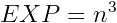

GlitchDex/RB:251
From Glitch City Wiki
(Redirected from 'M 'N g)
Jump to navigationJump to search| 'M 'N g | |
| Front: Back: | |
| Bulbapedia link | 'M 'N g |
| Equivalent glitch Pokémon | F q, (Yellow) |
| Generation II equivalent | Wobbuffet |
| Generation II Pokémon needed for Time Capsule exploit | Unknown |
| Name bytes | 01 E0 8C 3E 04 E0 8D CD A6 34 50 |
| Index number (hex) | FB |
| Index number (dec) | 251 |
| Pokédex number (Family) |
095 (Onix hybrid) |
| Pokédex marker byte | 0x5F |
| Pokédex flag (seen) | Seen Onix |
| Pokédex flag (own) | Own Onix |
| Type(s) | Rock/Ground |
| Category | (Varies) |
| Height | (Varies) |
| Weight | (Varies) |
| Palette attribute byte | |
| Catch rate constant | 0x2D |
| Experience group | Medium-Fast  Experience at Level 100: 1,000,000 Experience at Level 255: 16,581,375 |
| Experience yield | 0x6C |
| Sprite dimensions (base data) | 7x7 |
| Front sprite source pointer | 0D:4164 |
| Back sprite source pointer | 0D:4300 |
| Front sprite dimensions (actual) | 5x9 |
| Back sprite dimensions (actual) | 14x1 |
| ← Previous glitch Pokémon | Current glitch Pokémon | Next glitch Pokémon → |
|---|---|---|
| Glitch Pokémon (FA) | 'M 'N g (FB) | O (FC) |
'M 'N g is a dual-type Rock/Ground-type glitch Pokémon in Pokémon Red and Blue.
It is a hybrid of Onix.
F q, is the equivalent trade glitch Pokémon in Pokémon Yellow.
It cannot be caught with the Trainer escape glitch or another means of instant encounter, as a ) R 4. (0x33) glitch Trainer battle will be initiated instead.
There is no Generation II Pokémon that will become this glitch Pokémon in Generation I other than potentially through Celebi (Gold/Silver), Egg (Gold/Silver) and Egg (English Crystal) which convert into difficult to predict Pokémon.
Contents
Methods to obtain
- Party remaining HP glitch or storage box remaining HP glitch with a remaining HP of 251.
- CoolTrainer♀ corruption ("5" character).
- LOL glitch ("5" character)
- International fossil conversion glitch with an Attack stat of 251.
- Double distort CoolTrainer♀ corruption ("5" character)
- Equivalent trade of F q, from Pokémon Yellow.
- Arbitrary code execution
Starting moves
- Tackle
- Screech
Evolution(s)
'M 'N g (FB) |
Level 18 → |
 PkMn PkMn T (D0) |
Pokédex data
- Arbitrary Pokédex sourced from VRAM 9182.
Level-up moves
- Horn Drill (Level 1)
- Horn Drill (Level 2)
- Glitch Move 0xC1 (Level 3)
- TM05 (Level 5)
- TM50 (Level 12)
- Double Kick (Level 14)
- Hypnosis (Level 17)
- TM01 (Level 18)
- Razor Wind (Level 19)
- Glitch Move 0xC1 (Level 20)
- Submission (Level 24)
- HM03 (Level 26)
- TM54 (Level 28)
- Horn Drill (Level 29)
- Swords Dance (Level 32)
- Teleport (Level 33)
- TM13 (Level 38)
- TM13 (Level 39)
- Cut (Level 40)
- Whirlwind (Level 42)
- Fire Blast (Level 44)
- Tackle (Level 47)
- Wing Attack (Level 52)
- Wing Attack (Level 53)
- Pound (Level 62)
- TM50 (Level 71)
- TM03 (Level 79)
- TM11 (Level 95)
- TM11 (Level 99)
- Pound (Level 103)
- TM50 (Level 111)
- Tackle (Level 119)
- Swords Dance (Level 121)
- Clamp (Level 126)
- Whirlwind (Level 128)
- Mirror Move (Level 129)
- Swords Dance (Level 133)
- Body Slam (Level 144)
- Swords Dance (Level 145)
- Swords Dance (Level 166)
- Tackle (Level 174)
- Mirror Move (Level 175)
- TM54 (Level 193)
- TM05 (Level 195)
- Pay Day (Level 198)
- Wing Attack (Level 201)
- Defense Curl (Level 205)
- Fly (Level 208)
- TM50 (Level 209)
- Fire Blast (Level 211)
- Ember (Level 212)
- TM24 (Level 213)
- Glitch Move 0xAF (Level 224)
- TM12 (Level 226)
- TM12 (Level 227)
- Glitch Move 0xAE (Level 240)
- TM01 (Level 242)
- Recover (Level 250)
- TM03 (Level 252)
- Karate Chop (Level 254)
- Horn Drill (Level 255)
TM/HM moves
- TM06 Toxic
- TM08 Body Slam
- TM09 Take Down
- TM10 Double-Edge
- TM20 Rage
- TM26 Earthquake
- TM27 Fissure
- TM28 Dig
- TM31 Mimic
- TM32 Double Team
- TM34 Bide
- TM36 Selfdestruct
- TM40 Skull Bash
- TM44 Rest
- TM47 Explosion
- TM48 Rock Slide
- TM50 Substitute
- HM04 Strength
Base stats
| Base stats | Level 50 stat range | Level 100 stat range |
|---|---|---|
| HP: 35 | 95-141 | 180-273 |
| Attack: 45 | 50-96 | 95-188 |
| Defense: 160 | 165-211 | 325-418 |
| Speed: 70 | 75-121 | 145-238 |
| Special: 30 | 35-81 | 65-158 |
Categories:
- Glitch Pokémon which evolve
- GlitchDex articles
- Pokémon Red and Blue glitch Pokémon
- Generation I glitch Pokémon
- Glitch Pokémon
- Onix (095) hybrid glitch Pokémon
- Glitch Pokémon unavailable with the Time Capsule exploit
- Glitch Pokémon that evolve into other glitch Pokémon
- Glitch Pokémon which learn a glitch move 0xA6-0xC3
- Glitch Pokémon which learn a TM/HM glitch move
- Glitch Pokémon which learn a glitch move
- Arbitrary Pokédex glitch Pokémon
- Glitch Pokémon which are part of the Medium-Fast experience group
- Rock-type glitch Pokémon
- Ground-type glitch Pokémon